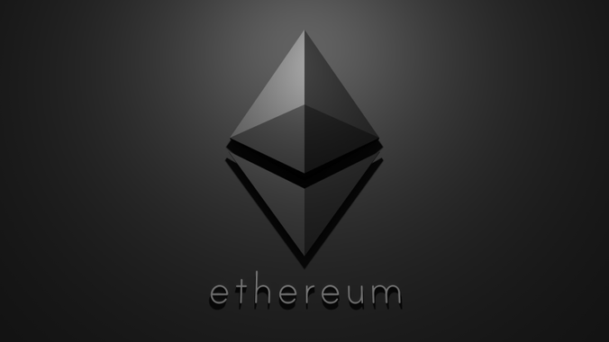
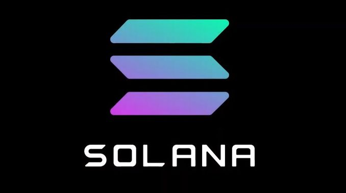

Node Validation
What Are Crypto Validators and How do They Work?
Crypto Validators are new “payment processors” in decentralized networks, and as such, they produce blockchain rewards.
It sounds simple, doesn’t it? However, the definition of validators in crypto is much more complex than that. Also, the role of a validator may change depending on the consensus mechanism that each blockchain uses.
In this guide to validators in blockchain, we take a closer look at this entity and its indispensable role. Furthermore, we analyze four validator use cases in different blockchains and their benefits. Read on to discover how validators work and whether staking is profitable!
What Are Validators In Blockchain?
A crypto validator is a participant in a blockchain responsible for verifying transactions. When it determines the accuracy of a transaction, the validator adds it to the distributed ledger. This way, the legitimacy of the blockchain and, subsequently, its transparent functioning remain intact.
The easiest way to understand what role validators play is to go back to the blockchain definition.
Blockchain is a system functioning on a distributed register of information. A network of nodes (computers) supports this register by storing and running the same version of it simultaneously.
For example, a blockchain is like a book (register) with countless authors (nodes). Each of these authors can contribute to this book. However, before they do so, they must receive the validation of the other authors. That’s when the other nodes, or their delegates, analyze the author’s data. And, if it is accurate, they validate it and add it to the register in a new block.
The necessary number of validators differs between blockchains. Also, the validation process may vary depending on the consensus mechanism of every blockchain. In the end, the chain can only contain accurate data that has received the entire community’s validation.
In most blockchains, users receive rewards for taking up a validator role. This way, the system incentivizes its participants to continue the ledger’s expansion process.
On the other hand, all blockchains use penalties for users who put up inaccurate data for validation. Generally, these participants receive a temporary or even a permanent ban from the system. That’s one way the ledger ensures its protection against malicious use.
How Many Types of Crypto Validators Are There?
It may seem that the job of a blockchain validator is not that difficult. You receive some data, check its accuracy, and validate it or not. However, validating new blocks on a distributed ledger is easier said than done.
Nevertheless, a validator on Bitcoin is different from a validator on Ethereum, which is not the same as one on Solana. So, what sets them apart? Let’s find out!
Validators on Proof-of-Work Blockchains
On Proof-of-Stake (PoS) blockchains, users have to stake a specific amount of the ledger’s native token to become validators. Also, the system may choose validators randomly and only reward those who participate correctly in the network.
Some of the most popular PoS blockchains include Ethereum, Avalanche, and Solana, among many others. These ledgers use Proof-of-Stake to incentivize users to lock up value within the network. This way, they ensure its fast progress and development.
Validators on Byzantine Fault Tolerance Blockchains
Blockchains that do not use PoW or PoS as consensus mechanisms can still employ validators. For instance, Stellar is a blockchain operating on the Byzantine Fault Tolerance consensus mechanism.
When a decentralized ledger uses this mechanism, some nodes can provide inaccurate data for validation. These nodes may be corrupt and intentionally misuse the network. However, as long as most validator nodes are honest, the validation process has an accuracy guarantee. As a result, it adds more data to the chain despite the malicious actions of some of its nodes.
On Stellar, the validation process predicts from the start that some of the messages may be corrupt. However, data can receive validation as long as these nefarious messages exceed one-third of the total. Otherwise, the transaction would become invalid.
Validators vs. Miners – What’s the Difference?
Winning rewards for validating data on a blockchain can increase your crypto assets significantly. But, which blockchain pays validators best? And, are miners and validators the same?
Miners are participants in a PoW-based blockchain that does not have to stake anything to validate (mining) data. Instead, they have to invest in high-performance computers that can solve mathematical puzzles quickly and efficiently. These machines are often expensive and weigh heavily on the environment. Furthermore, in the long-term, mining for data may deliver smaller rewards than the costs it involves.
On the other hand, participants to a PoS-based blockchain have to stake crypto assets to become validators. That means that instead of investing in expensive, eco-damaging computers, they can simply buy digital coins.
Staking to become validators reduces the costs of keeping an effective blockchain functioning. Also, it can shift energy costs and regulations. Lastly, it is more accessible and impervious to the wear and tear risks that mining equipment faces.
In conclusion, miners and validators have very similar roles. They have to ensure that the network they’re supporting expands on accurate data. However, the way they enter the validation process differs substantially between the two.
How Do Validators Work on a Blockchain?
To become a validator on Proof-of-Stake blockchains, you have to stake (wager) your assets. What is staking?
Staking is a way to make your crypto holdings work for you and, potentially, multiply. This happens through rewards you receive for committing your crypto to validate and confirm blockchain transactions. Below are the four most popular PoS networks that use this system.

Validators on Ethereum
While Ethereum started as a Proof-of-Work ledger, it slowly moved to a Proof-of-Stake (PoS) consensus mechanism. Once migration ends, participants to Ethereum will turn into validators by staking no less than 32 ETH. At the time of this writing, that sum equals roughly $107,200.
The system will choose validators randomly to create new blocks. They will be responsible for checking and confirming blocks they don’t make. The stake should incentivize the validator to provide accurate data and good behavior. Otherwise, it might lose a portion of its stakings.
How to Become a Validator on Ethereum
Once Ethereum sees the completion of the Beacon Chain Upgrade, you should be able to stake on Ethereum. By then, the network should upgrade to Ethereum 2 and offer more details on the Proof-of-Stake mechanism and rewards.
As of now, to validate blocks on Ethereum, you will need:
- Stake 32 ETH to become a total validator or some ETH to join a staking pool.
- Run an ‘Eth1’ or Mainnet client or a backend API.
- Batch transactions into a new block or check the work of other validators.
With these simple actions, you can support the chain running securely. Also, you should refrain from malicious activities, going offline, or failing to validate. Otherwise, you will lose a significant portion of your stakings. In return for honest validating, you should receive 10% of your annual stakings.

Solana is a high-throughput blockchain and among some of the most recently successful crypto projects. Since its launch in early 2020, it has swiftly grown into the go-to platform for over 400 projects spanning DeFi, NFTs, Web3, and more.
Solana uses Delegated-Proof-of-Stake (DPoS) for a consensus mechanism. This means that anyone holding the platform’s native token, SOL, can participate in the validating process. However, you can delegate your SOL to a validator which does the entire job for you. This means that you don’t need a minimum amount to stake. You can have only 1 SOL and still be an active part of Solana as a delegator.
The validator receives stakes from delegators, which increases its chances for more slots and, subsequently, more rewards.
As a delegator, you can withdraw your stakings at any time. You can do so regardless of the validator’s performance and without providing a reason.
How to Become a Validator on Solana
On Solana, you can go beyond the Delegator role and become a Validator. However, you will have to meet more requirements.
One prerequisite is learning how Solana works. This blockchain operates in epochs, which may be between 2 and 3 days long. Also, every epoch consists of 420,000 blocks and a targeted block time of 400ms.
As a validator, you have to vote on every single block. To earn rewards, you cannot miss any of them. Even more, rewards represent a factor of the percentage success in voting and the stake you have relative to the rest of the network.
For example, if you hold 2% of the network’s total stake and vote on every block, you earn 2% of the rewards. And, to reach this performance, you will need:
- A powerful server running on a 12 cores / 24 threads CPU of 2.8GHZ or higher
- Pay for vote fees, which may amount to 1 SOL per day.
- Stake at least 5K SOL from your funds or 50K SOL from delegators.
As of September 2021, Solana is riding high and attracting investors at a remarkable speed. As a result, the demands for validating on this blockchain should increase in both power and costs. So, the time to enter the action is now. Read more on requirements for becoming a validator on Solana here.
Polkadot is a unique type of blockchain that connects multiple sharded chains into one heterogeneous architecture. Also, it allows external networks to join as customized layer one “parachains” for accessible communication. Simply put, it is an interconnected internet of blockchains.
Polkadot considers that both the Proof-of-Work and Proof-of-Stake consensus algorithms are environmentally unfriendly. So, the network uses an eco-compatible Nominated Proof-of-Stake (NPoS) algorithm.
NPoS works thanks to two crucial roles, validators and nominators, which maximize its security. The validators take the responsibility of producing new blocks, validating parachain blocks, and ensuring finality. On the other hand, Nominators can choose to back select validators with their stake in the form of DOT tokens.
How to Become a Validator on Polkadot
To become a validator on Polkadot, you need to run a node (computer) supporting the network 24/7 and 365 days a year. This means that you will need to take on a great deal of responsibility. Also, you will need:
- A computer with at least Intel(R) Core(TM) i7-7700K CPU @ 4.20GHz
- A cloud server running Linux.
- At least 80GB worth of storage space
Besides having to run this node non-stop, you will have to verify the data from parachain blocks. Also, you will need to participate in the consensus process, which approves blocks from other validators. In return, you will receive block rewards and transaction fees.
If you fail to comply with the consensus algorithms on Polkadot, you may suffer dire consequences. Punishments vary from removing some of your staked DOT to complete confiscation of your stakings and permanent banning. This process goes by the name of “slashing” on this network.
You can always become a nominator on Polkadot if you don’t want to take up the validator role. As a nominator, you can pick which validator to back, depending on their behavior and performance. You stake an arbitrary amount of DOT and receive a share of the validator’s rewards.

Avalanche is one of the fastest smart contracts platforms in the blockchain industry. Like other blockchains, it uses a variation of the Proof-of-Stake consensus mechanismto ensure its security and the accuracy of its data.
Simply put, Avalanche is a voting protocol. On it, participants can take up the validator role by listening to transactions. Once they find one, they vote on its acceptance or rejection. Next, it collaborates with the rest of the network to identify whether everyone agrees with its decision.
However, the process doesn’t stop there. Following “repeated random subsampling,” the network randomly selects other validators to ask them what they like. This mechanism repeats several times until it builds enough data to determine the correctness of the validator’s decision. Therefore, the probability of making a correct decision is so high you may as well consider it impossible to be wrong.
How to Become a Validator on Avalanche
The best part about being a validator on Avalanche is that you can do it on a regular home computer. More precisely, your machine has to have at least a 2GHz CPU, 4GB RAM, and free disk space of 10GB. Also, you will have to stake a minimum of 2000 $AVAX at all times.
Additionally, Avalanche doesn’t practice “slashing.” So, if your computer goes offline, you will only stop receiving rewards until you go back online. Furthermore, you will not get punishments or risk banning. Lastly, you should receive rewards between 7% and 12% APR on your annual stakings.
Blockchain technology has brought us various ways of passive and active income. Being a validator on a decentralized ledger combines these two ways of acquiring wealth. Firstly, you need to have a relatively strong computer (node) to support the network’s security and functioning. Secondly, as long as you meet all the requirements, your rewards can grow substantially in the background.
For as long as blockchain evolves, validation protocols will develop and acquire new forms. So far, the validator’s role has come a long way from the initial Bitcoin miner and up to the present-day Solana validator. In the end, this critical actor of blockchain technology is not only its sower but its rewards reaper too.